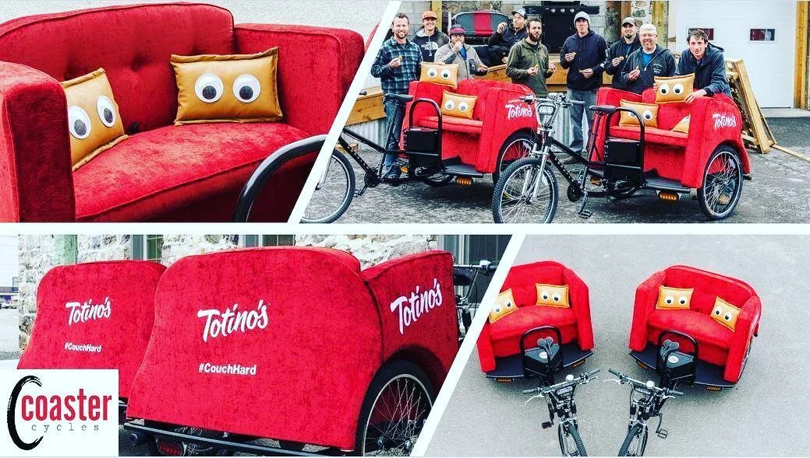

Twitch
Role: Branded Content Strategist, Custom Solutions
As a Branded Content Strategist on Twitch's Custom Solutions team, I was the creative engine behind branded sponsorship pitches, campaign concepts, and live event executions for some of the biggest names in gaming. I worked across pitch decks, motion design, broadcast overlays, experiential activations, and original content strategy — often being the first to dream up how a brand could be the launch partner for a new Twitch product.
I also produced original animation and motion design for branded broadcasts: custom overlays, emotes, and influencer-starring spots that brought brand campaigns to life on stream.
God of War launch stream overlays
Totino's Pedi-Couch @ TwitchCon

Progressive × OMGItsFirefoxx
Character Animator broadcast demo
Selected work
- Products — pitching sponsorship strategies for new Twitch launches
- Cheermotes Custom Cheermotes — branded animated emotes for chat engagement
- Drops Twitch Drops — in-game rewards for watching sponsored broadcasts
- Extensions Twitch Extensions — interactive overlays and brand integrations
- Campaigns & Activations — sponsored broadcasts, contests, and live events
- Totino's Pedi-couch TwitchCon experiential activation — turning Totino's 'Couch Hard' campaign into a live stunt
- HP Omen Challenge Pitched brand sponsorship and activation strategy around HP's creator gaming tournament at TwitchCon
- Last Guardian Art Contest Leveraged Twitch's budding creative community to produce a fan art contest for Sony's The Last Guardian launch
- Contest entry Live-streamed fan art entry — VOD 1
- Contest entry Live-streamed fan art entry — VOD 2
- Contest entry Live-streamed fan art entry — VOD 3
- Original Content — sponsored episodes of Twitch Studios productions
- Stream On Twitch Studios game show — pitched brand partnership integrations
- FreshStock Twitch's original creator lifestyle show — pitched brand partnership integrations
- ChefShock Twitch's live cooking show with Food Network — pitched brand partnership integrations
- Creative Initiatives — new formats and animation work
- Animated Broadcaster Characters Pitched interactive livestreams with bespoke animated characters — before vtubers were a thing